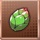
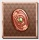
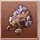
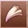

铜素材一览
铜水晶
【成长之路】初/中/高级
【任务】角色经验(150)

龙之果实
【龙果树】
【龙之试炼】龙经验(150)
铜磨刀石
【狄涅尔帝国迎击战】
武器经验(500)
圣水
※活动奖励
龙辉护符经验(500)
火之珠
【炎吼遗迹(二)】初/中级
【炎吼遗迹(二)】高级 (推荐)
【道具召唤】魔法圆环、火之祭坛、圣城
水之珠
【水蚀遗迹(三)】初/中级
【水蚀遗迹(三)】高级 (推荐)
【道具召唤】魔法圆环、水之祭坛、圣城
风之珠
【风槌遗迹(四)】初/中级
【风槌遗迹(四)】高级 (推荐)
【道具召唤】魔法圆环、风之祭坛、圣城
光之珠
【成长之路】
【光裂遗迹(五)】初/中级
【光裂遗迹(五)】高级 (推荐)
【道具召唤】魔法圆环、光之祭坛、圣城、金币矿山
暗之珠
【暗穿遗迹(六)】初/中级
【暗穿遗迹(六)】高级 (推荐)
【道具召唤】魔法圆环、暗之祭坛、圣城

狄涅尔铜币
【狄涅尔帝国迎击战】中/高级
【狄涅尔帝国迎击战】超级 (推荐)交换/升级训练场

铁矿石
【风槌遗迹(四)】初级 (推荐)
【风槌遗迹(四)】中级
【阿德拉火山之战】初/中级
【多尼托斯山脉之战】初/中级
【道具召唤】剑/刀/斧系 ★4武器(1阶段) ★3武器

魔兽指甲
【炎吼遗迹(二)】初级 (推荐)
【炎吼遗迹(二)】中级
【光裂遗迹(五)】初级 (推荐)
【光裂遗迹(五)】中级
【米勒朱湖畔之战】初/中级
【瓦特阿尔遗迹之战】初/中级
【道具召唤】短剑/枪/弓系 ★4武器(1阶段) ★3武器
蝙蝠翅膀
【水蚀遗迹(三)】初级 (推荐)
【水蚀遗迹(三)】中级
【暗穿遗迹(六)】初级 (推荐)
【暗穿遗迹(六)】中级
【罗布雷尔森林之战】初/中级
【道具召唤】魔杖/法杖系 ★4武器(1阶段) ★3武器
轻金属
【龙之试炼】初/中级
【龙之试炼】高级 (推荐)
【道具召唤】制作★3武器(2阶段/3阶段)

蜂蜜
※活动奖励
回复体力(10)
图标
名称
掉落
用途